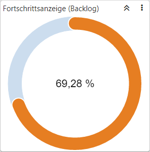
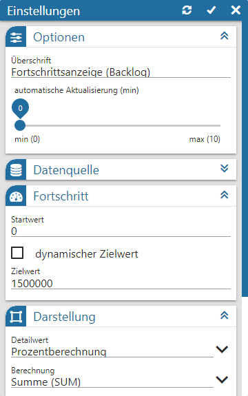
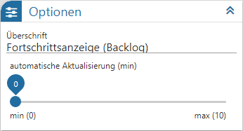
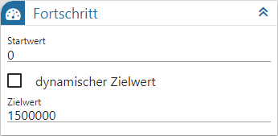
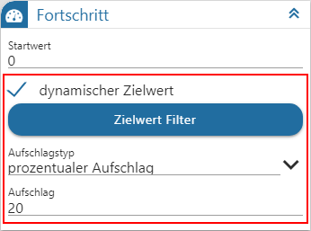
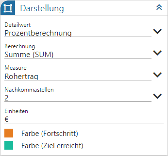
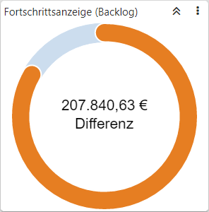
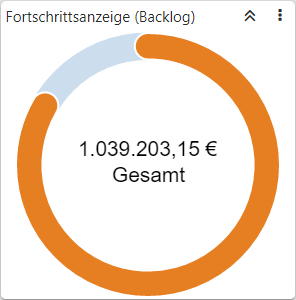

Power Report - Widgets - Fortschrittsanzeige

Dieses Widgets stellt den Fortschritt in Form von Grafik und Zahl da. Hierfür ist neben der Angabe des aktuellen Werts, auch die Hinterlegung des Zielwerts notwendig.
Einstellungen

Folgende Eingabefelder, Einstellungen und Informationen stehen zur Verfügung:
Optionen

Ø Überschrift
An dieser Stelle wird die Bezeichnung der Fortschrittsanzeige definiert.
Ø automatische Aktualisierung (min)
An dieser Stelle kann definiert werden, ob sich der Inhalt der Anzeige automatisch aktualisieren soll. Mit der Einstellung "0" findet keine Aktualisierung statt.
Datenquelle

Ø Datenquelle
Dieses Informationsfeld zeigt den Namen der zu Grunde liegenden Datenquelle an.
Ø Datenherkunft
An dieser Stelle kann mit Hilfe einer Auswahlliste definiert werden, aus welchem Bereich der Datenquelle die Daten des Widgets stammen sollen. Die Auswahl "aktuell" steht immer zur Verfügung und spiegelt die im Ausgangsfenster gewählte Datenquelle (temporäre Datenquelle, Snapshot, View oder MasterView) wieder.
Hinweis
Gibt es für die Datenquelle mehrere Snapshots, so sind diese über den Eintrag "xxx (statisch)" (xxx => Name der Auswertung) zusammengefasst. Innerhalb der Snapshots erfolgt die weitere Selektion über den Widget Filter.
Ø  Widget Filter
Widget Filter
Durch Anwahl dieses Buttons wird das Fenster Widget Filter geöffnet. In diesem kann die genutzte Datenquelle nach frei definierbaren Kriterien eingeschränkt werden.
Hinweis
Handelt es sich nicht um eine importiere Datenquelle, so werden die folgenden Selektionskriterien automatisch vorgegeben, wobei ein Editieren selbstverständlich möglich ist:
ü Mandant
Es wird durch die
Filterzeile "Mandant = aktuell" automatisch auf die Daten des aktuellen Mandaten
eingegrenzt.
ü Selektion 1 bis 4 / Filter
Es
wird automatisch auf die Daten jenes Snapshots eingegrenzt, über welchen der
Power Report ausgegeben wurde. Die Filterzeilen hierzu lauten "Selektion X =
aktuell" bzw. "Filter = aktuell".
Hinweis
Mit Hilfe des Widgets Datenquellen Info ist jederzeit nachvollziehbar, was sich gerade hinter "aktuell" verbirgt (Einstellung "Aktuelle Sel.").
Fortschritt

Ø Startwert / Zielwert
Hier muss der Wertbereich der Fortschrittsanzeige hinterlegt werden. Anhand dessen wird der Fortschritt des aktuelle Werts berechnet, wobei…
ü … der Zielwert für alle mathematischen Berechnungen und die Erzeugung der Grafik verwendet wird. Es kann sich dabei um einen festen oder dynamischen Wert handeln (siehe Option "dynamischer Zielwert").
ü … der Startwert nur für die Erzeugung der Grafik verwendet wird und in der Regel "0" lautet.
Ø dynamischer Zielwert
Durch Anwahl dieser Option wird der Zielwert nicht mehr in Form einer hinterlegten Zahl vorgegeben, sondern errechnet sich dynamisch über die Datenquelle. Hierfür stehen die folgenden Buttons und Eingabefelder zur Verfügung:
ü Zielwert Filter
Durch Anwahl
dieses Buttons wird ein Fenster in der Art des Widget Filter geöffnet. In diesem kann
die genutzte Datenquelle nach frei definierbaren Kriterien eingeschränkt werden
um die Datengrundlage des Zielwerts zu ermitteln.
Beispiel
In der Verkaufsstatistik soll das aktuelle Jahr mit dem Vorjahr verglichen werden. Über das Datenfeld "Fakturendatum" und dem Operator "Jahr + / - X = -1" wird auf die Daten des Vorjahres zugegriffen und der Zielwert somit dynamisch ermittelt.
ü Aufschlagstyp
An dieser Stelle
kann hinterlegt werden, ob der dynamisch ermittelte Zielwert mit einem Aufschlag
versehen werden soll. Hierbei kann zwischen "kein Aufschlag", "fixer Aufschlag"
und "prozentualer Aufschlag" gewählt werden.
ü Aufschlag
Wurde im Feld
"Aufschlagstyp" die Auswahl "fixer Aufschlag" oder "prozentualer Aufschlag"
getroffen, so kann hier der Aufschlag hinterlegt werden.
Beispiel

Darstellung

Ø Detailwert
Innerhalb der Fortschrittsanzeige wird der Fortschritt in Zahlen wiedergegeben, wobei folgende Varianten zur Verfügung stehen:
ü Prozentberechnung
Es wird "(100
/ Zielwert) * aktueller Wert" gerechnet und angezeigt.
ü Differenzwert
Es wird "Zielwert
- aktueller Wert" gerechnet und angezeigt.

ü Gesamtwert
Es wird der
"aktuelle Wert" berechnet und angezeigt.

ü Animation
Es werden alle
Detailwertanzeige in einer sich wiederholenden Schleife angezeigt. Die
Geschindigkeit kann in dem Feld "Animationsgeschwindigkeit" definiert
werden.
Ø Animationsgeschwindigkeit
Wenn unter "Detailwert" die Variante "Animation" hinterlegt wurde, so kann hier die Geschwindigkeit des Wechsels hinterlegt werden.
Ø Berechnung
An dieser Stelle wird die Berechnung des "aktuellen Werts" definiert, d.h. was mit dem Wert aus dem Feld "Measure" getan werden soll. Folgende Varianten stehen zur Verfügung:
ü Summe (SUM)
Mit dieser Option
werden alle Werte summiert und dementsprechend angezeigt.
ü Anzahl (COU)
Mit dieser Option
wird angezeigt, wieviel Datensätze in der Auswertung vorhanden sind.
ü Kleinste (MIN)
Mit dieser
Option wird der kleinste Wert der Auswertung angezeigt.
ü Größte (MAX)
Mit dieser Option
wird der größte Wert der Auswertung angezeigt.
ü Durchschnitt (AVG)
Mit dieser
Option wird der durchschnittliche Wert der Auswertung angezeigt.
Ø Measure
Mit Hilfe einer Auswahlliste kann das Zahlenfeld für die Berechnung des "aktuellen Werts" ausgewählt werden.
Ø Nachkommastellen
Aus einer Auswahlliste kann die Anzahl der Nachkommastellen für die Anzeige in der Kachel definiert werden.
Ø Einheit
Für den Zahlenwert der Detailanzeige kann hier ein Zusatz definiert werden, d.h. was "ist" die Zahl.
Hinweis
Bei der Prozentberechnung wird immer "%" angezeigt.
Ø Farbe (Fortschritt)
An dieser Stelle kann jene Farbe hinterlegt werden, welche verwendet wird, solange das Ziel noch nicht erreicht wurde.
Ø Farbe (Ziel erreicht)
An dieser Stelle kann jene Farbe hinterlegt werden, welche verwendet wird, sobald das Ziel erreicht wurde.
Buttons

Ø Aktualisierung
Mit Hilfe dieses Buttons werden die Einstellungen gespeichert, direkt angewendet und das Einstellungsfenster bleibt geöffnet.
Ø Ok
Durch Anwahl des Buttons "Ok" werden die Änderungen angewendet und das Fenster geschlossen.
Ø Ende
Durch Anwahl des Buttons "Ende" wird das Einstellungsfenster geschlossen und nicht gespeicherte Änderungen verworfen.